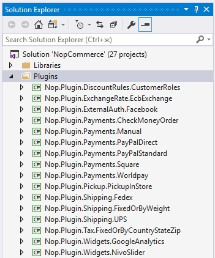
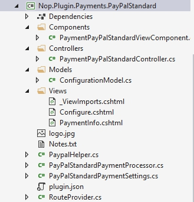

如何為 nopCommerce 4.10 編寫外掛
在電腦運算中，外掛（plugin）是一組能為大型軟體應用程式新增特定功能的軟體元件（維基百科）。
外掛用於擴充 nopCommerce 的功能。nopCommerce 擁有幾種類型的外掛。例如：付款方式（如 PayPal）、稅務提供者、運送方式計算方法（如 UPS、USPS、FedEx）、小工具（如「線上客服」區塊）等等。nopCommerce 本身已預先安裝並提供了許多不同的外掛。您也可以在 nopCommerce 官方網站 上搜尋各種外掛，看看是否已經有人開發出符合您需求的外掛。如果沒有，本文將引導您完成建立自訂外掛的過程。
外掛結構、必要檔案與位置
首先，您需要於解決方案中建立一個新的「類別庫 (Class Library)」專案。建議將所有外掛放置在解決方案根目錄的
\Plugins目錄中（請勿與位於\Nop.Web目錄內的\Plugins子目錄混淆，後者是用於已部署的外掛）。將所有外掛放置在「Plugins」解決方案資料夾中是一個良好的習慣（關於解決方案資料夾的更多資訊，請參閱 here）。外掛專案的建議命名方式為 "Nop.Plugin.{Group}.{Name}"。其中 {Group} 是您的外掛類別（例如 "Payment" 或 "Shipping"），{Name} 則是您的外掛名稱（例如 "PayPalStandard"）。例如，PayPal Standard 付款外掛的命名為：Nop.Plugin.Payments.PayPalStandard。但請注意，這並非強制規定，您可以為外掛選擇任何名稱，例如 "MyGreatPlugin"。

當外掛專案建立完成後，您必須使用任何文字編輯器開啟其
.csproj檔案，並將內容替換為以下內容：<Project Sdk="Microsoft.NET.Sdk"> <PropertyGroup> <TargetFramework>netcoreapp2.1</TargetFramework> </PropertyGroup> <PropertyGroup Condition="'$(Configuration)|$(Platform)'=='Release|AnyCPU'"> <OutputPath>..\..\Presentation\Nop.Web\Plugins\PLUGIN_OUTPUT_DIRECTORY</OutputPath> <OutDir>$(OutputPath)</OutDir> </PropertyGroup> <PropertyGroup Condition="'$(Configuration)|$(Platform)'=='Debug|AnyCPU'"> <OutputPath>..\..\Presentation\Nop.Web\Plugins\PLUGIN_OUTPUT_DIRECTORY</OutputPath> <OutDir>$(OutputPath)</OutDir> </PropertyGroup> <!-- This target execute after "Build" target --> <Target Name="NopTarget" AfterTargets="Build"> <!-- Delete unnecessary libraries from plugins path --> <MSBuild Projects="$(MSBuildProjectDirectory)\..\..\Build\ClearPluginAssemblies.proj" Properties="PluginPath=$(MSBuildProjectDirectory)\$(OutDir)" Targets="NopClear" /> </Target> </Project>其中 PLUGIN_OUTPUT_DIRECTORY 應替換為外掛名稱，例如 Payments.PayPalStandard。
我們採用這種方式，是為了能夠運用 .NET Core 所引進的新方法來加入第三方參考。但這並非強制性要求。此外，來自已參考函式庫的參考將會自動載入，因此這非常方便。
下一個步驟是建立每個外掛所需的
plugin.json檔案。此檔案包含描述您外掛的中繼資料（meta-information）。您只需從任何其他現有的外掛複製此檔案，並根據您的需求進行修改即可。關於plugin.json檔案的詳細資訊，請參閱 plugin.json file。最後一個必要的步驟是建立一個實作
IPlugin介面（位於 Nop.Core.Plugins 命名空間）的類別。nopCommerce 提供了BasePlugin類別，它已經實作了一些IPlugin方法，讓您可以避免重複編寫原始程式碼。nopCommerce 還為您提供了一些衍生自IPlugin的特定介面。例如，我們有用於建立新付款方式外掛的 "IPaymentMethod" 介面。它包含一些僅針對付款方式特定的方法，例如 ProcessPayment() 或 GetAdditionalHandlingFee()。目前，nopCommerce 擁有以下特定的外掛介面：- IPaymentMethod：這些外掛用於付款處理。
- IShippingRateComputationMethod：這些外掛用於擷取可用的配送方式與對應的運費。例如：UPS、FedEx 等。
- IPickupPointProvider：這些外掛用於提供取貨點。
- ITaxProvider：稅務提供者用於取得稅率。
- IExchangeRateProvider：用於取得匯率。
- IDiscountRequirementRule：允許您建立新的折扣規則，例如「顧客的帳單地址國家必須是……」。
- IExternalAuthenticationMethod：用於建立外部驗證方式，例如 Facebook、Twitter、OpenID 等。
- IWidgetPlugin：允許您建立小工具。小工具會顯示在網站的某些區塊中。例如，網站左欄的「線上客服」區塊。
- IMiscPlugin：若您的外掛不適用於上述任何介面，則使用此介面。
Important
每次編譯專案後，請在進行變更前清理解決方案。某些資源會被快取，可能會導致開發者抓狂。
處理請求：Controllers、Models 與 Views
現在，您可以透過前往 後台 → 設定 → 外掛 來查看該外掛。但如您所料，目前我們的外掛什麼功能也沒有，甚至連設定的使用者介面都沒有。讓我們來建立一個頁面以便設定此外掛。
我們現在需要做的是建立一個 Controller、一個 Model 和一個 View。
- MVC Controllers 負責回應針對 ASP.NET MVC 網站提出的請求。每個瀏覽器請求都會對應到特定的 Controller。
- View 包含傳送到瀏覽器的 HTML 標記與內容。在開發 ASP.NET MVC 應用程式時，View 等同於頁面。
- MVC Model 包含應用程式中所有未包含在 View 或 Controller 中的應用程式邏輯。
您可以透過 here 找到更多關於 MVC 模式的資訊。
那麼，讓我們開始吧：
建立 Model：在外掛中加入一個 Models 資料夾，然後加入一個符合您需求的 Model 類別。
建立 View：在外掛中加入一個 Views 資料夾，然後加入一個名為
Configure.cshtml的 cshtml 檔案。將該 View 檔案的「Build Action」屬性設為「Content」，並將「Copy to Output Directory」屬性設為「Copy if newer」。請注意，設定頁面應使用_ConfigurePlugin版面配置（layout）。此外，請確保您的 \Views 目錄中有_ViewImports檔案。您可以直接從任何現有的外掛複製過來。建立 Controller：在外掛中加入一個 Controllers 資料夾，然後加入一個新的 Controller 類別。一個好的做法是將外掛的 Controller 命名為
{Group}{Name}Controller.cs。例如：PaymentPayPalStandardController。當然，這並非強制規定（僅為建議）。接著，為設定頁面（在後台區域中）建立適當的 Action 方法。我們將其命名為「Configure」。準備一個 Model 類別，並使用實體路徑將其傳遞給 View：~/Plugins/{PluginOutputDirectory}/Views/Configure.cshtml。為您的 Action 方法使用下列屬性：
[AuthorizeAdmin] //confirms access to the admin panel [Area(AreaNames.Admin)] //specifies the area containing a controller or action例如，開啟 PayPalStandard 付款外掛，並查看其
PaymentPayPalStandardController的實作方式。
接著，對於每個擁有設定頁面的外掛，您都應該指定一個設定 URL。名為 BasePlugin 的基底類別擁有 GetConfigurationPageUrl 方法，該方法會回傳設定 URL：
return $"{_webHelper.GetStoreLocation()}Admin/ControllerName/ActionName";
其中 ControllerName 是您的 Controller 名稱，而 ActionName 是 Action 的名稱（通常為「Configure」）。
一旦您安裝了外掛並加入了設定方法，您將會在 後台 → 設定 → 外掛 下方找到一個設定此外掛的連結。
Tip
完成上述步驟最簡單的方法是開啟任何其他外掛，並將這些檔案複製到您的外掛專案中，然後只需重新命名適當的類別與目錄即可。
例如，PayPalStandard 外掛的專案結構如下圖所示：

處理 "Install" 與 "Uninstall" 方法
此步驟為選用。有些外掛在安裝過程中可能需要額外的邏輯。例如，外掛可能需要插入新的語言資源。請開啟您的 IPlugin 實作（大多數情況下將繼承自 BasePlugin 類別）並覆寫下列方法：
- Install。此方法將在安裝外掛時被呼叫。您可以在此初始化任何設定、插入新的語言資源，或是建立新的資料庫資料表（若有需要）。
- Uninstall。此方法將在解除安裝外掛時被呼叫。
Important
如果您覆寫了其中一個方法，請勿隱藏其基礎實作。
例如，覆寫的 "Install" 方法應包含下列方法呼叫：base.Install()。PayPalStandard 外掛的 "Install" 方法如下列程式碼所示：
public override void Install()
{
var settings = new PayPalStandardPaymentSettings()
{
UseSandbox = true
};
_settingService.SaveSetting(settings);
base.Install();
}
Tip
已安裝外掛的清單位於 \App_Data\installedPlugins.json。該清單是在安裝過程中建立的。
路由
在這裡，我們將介紹如何註冊外掛路由。ASP.NET Core 路由負責將傳入的瀏覽器請求對應到特定的 MVC 控制器動作。您可以參考 here 以取得關於路由的更多資訊。請遵循以下步驟：
如果您需要新增自訂路由，請建立
RouteProvider.cs檔案。它會將外掛路由的資訊通知給 nopCommerce 系統。例如，以下的 RouteProvider 類別新增了一個新路由，可以透過開啟您的網頁瀏覽器並瀏覽至http://www.yourStore.com/Plugins/PaymentPayPalStandard/PDTHandlerURL 來存取（PayPal 外掛所使用）：public partial class RouteProvider : IRouteProvider { public void RegisterRoutes(IRouteBuilder routeBuilder) { routeBuilder.MapRoute("Plugin.Payments.PayPalStandard.PDTHandler", "Plugins/ PaymentPayPalStandard/PDTHandler", new { controller = "PaymentPayPalStandard", action = "PDTHandler" }); } public int Priority { get { return -1; } } }
升級 nopCommerce 可能會導致外掛失效
部分外掛可能會過時，並無法再與新版本的 nopCommerce 相容。如果您在升級到新版本後遇到問題，請刪除該外掛，並前往 nopCommerce 官方網站查看是否有更新的版本可用。許多外掛開發者會更新其外掛以配合新版本，但也有部分開發者不會這麼做，導致其外掛隨著 nopCommerce 的效能提升而變得無法使用。不過在大多數情況下，您只需開啟對應的 plugin.json 檔案，並更新 SupportedVersions 欄位即可。
結論
希望這能協助您開始使用 nopCommerce，並為您構建更複雜的外掛做好準備。